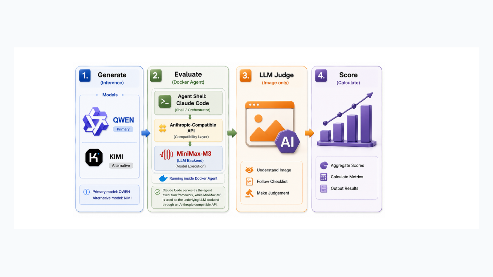

WebPilot: Browser-Grounded Multimodal Web Coding Agent
Research question: How can a web-coding agent improve generated applications by observing browser execution?
Method: Iterative generation, execution, diagnosis and repair using screenshots, DOM state, console/build feedback and interaction results.
Evidence: Developed during SMILES 2026 with a browser-grounded multimodal evaluation workflow; the work led to a co-authored SSPP 2026 manuscript submission via OpenReview.
My contribution: Contributed to the research workflow, experimental evaluation and manuscript development during SMILES 2026.